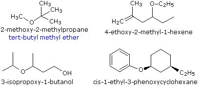
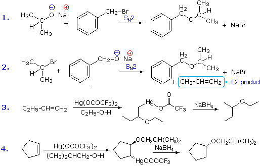
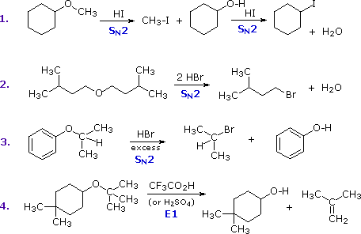
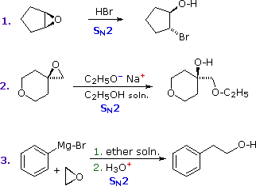

This page is the property of The Edvibe Team.
Comments, questions and errors should
be sent to contact@edvibe.co.ke.
These pages are provided to the IOCD to assist in capacity building in chemical education. 05/05/2013

Ethers |
|---|
Ethers are compounds having two alkyl or aryl groups bonded to an oxygen atom, as in the formula R1–O–R2. The ether functional group does not have a characteristic IUPAC nomenclature suffix, so it is necessary to designate it as a substituent. To do so the common alkoxy substituents are given names derived from their alkyl component, as shown in the table on the right below. Examples of ether nomenclature are provided on the left. Simple ethers are given common names in which the alkyl groups bonded to the oxygen are named in alphabetical order followed by the word "ether". The top left example shows the common name in blue under the IUPAC name. Many simple ethers are symmetrical, in that the two alkyl substituents are the same. These are named as "dialkyl ethers". Examples are: CH3CH2OCH2CH3, diethyl ether (sometimes referred to as ether), and CH3OCH2CH2OCH3, ethylene glycol dimethyl ether (glyme).
 |
|
Sulfur analogs of ethers (R–S–R') are called sulfides. For example, (CH3)3C–S–CH3 is tert-butyl methyl sulfide. Sulfides are chemically more reactive than ethers, reflecting the greater nucleophilicity of sulfur relative to oxygen.
Ether Synthesis |
|---|
Ethers are usually prepared from alcohols or their conjugate bases. One important procedure, known as the Williamson Ether Synthesis, proceeds by an SN2 reaction of an alkoxide nucleophile with an alkyl halide. Reactions #1 and #2 below are two examples of this procedure. When applied to an unsymmetrical ether, as in this case, there are two different combinations of reactants are possible. Of these one is usually better than the other. Since alkoxide anions are strong bases, the possibility of a competing E2 elimination must always be considered. Bearing in mind the factors that favor substitution over elimination, a 1º-alkyl halide should be selected as a preferred reactant whenever possible. Thus, reaction #1 gives a better and cleaner yield of benzyl isopropyl ether than does reaction #2, which generates considerable elimination product.

A second general ether synthesis, alkoxymercuration, is patterned after the oxymercuration reaction. Reactions #3 and #4 are examples of this two-step procedure. Note that the alcohol reactant is used as the solvent, and a trifluoroacetate mercury (II) salt is used in preference to the acetate (trifluoroacetate anion is a poorer nucleophile than acetate). The mechanism of alkoxymercuration is similar to that of oxymercuration, with an initial anti-addition of the mercuric species and alcohol being followed by reductive demercuration.
Acid-catalyzed dehydration of small 1º-alcohols constitutes a specialized method of preparing symmetrical ethers. As shown in the following two equations, the success of this procedure depends on the temperature. At 110º to 130 ºC an SN2 reaction of the alcohol conjugate acid leads to an ether product. At higher temperatures (over 150 ºC) an E2 elimination takes place.
| 2 CH3CH2-OH + H2SO4 | 130 ºC | CH3CH2-O-CH2CH3 + H2O |
| CH3CH2-OH + H2SO4 | 150 ºC | CH2=CH2 + H2O |
Reactions of Ethers |
|---|
Ethers are widely used as solvents for a variety of organic compounds and reactions, suggesting that they are relatively unreactive themselves. Indeed, with the exception of the alkanes, cycloalkanes and fluorocarbons, ethers are probably the least reactive, common class of organic compounds. The inert nature of the ethers relative to the alcohols is undoubtedly due to the absence of the reactive O–H bond.
The most common reaction of ethers is cleavage of the C–O bond by strong acids. This may occur by SN1 or E1 mechanisms for 3º-alkyl groups or by an SN2 mechanism for 1º-alkyl groups. Some examples are shown in the following diagram. The conjugate acid of the ether is an intermediate in all these reactions, just as conjugate acids were intermediates in certain alcohol reactions.

The first two reactions proceed by a sequence of SN2 steps in which the iodide or bromide anion displaces an alcohol in the first step, and then converts the conjugate acid of that alcohol to an alkyl halide in the second. Since SN2 reactions are favored at least hindered sites, the methyl group in example #1 is cleaved first. The 2º-alkyl group in example #3 is probably cleaved by an SN2 mechanism, but the SN1 alternative cannot be ruled out. The phenol formed in this reaction does not react further, since SN2, SN1 and E1 reactions do not take place on aromatic rings. The last example shows the cleavage of a 3º-alkyl group by a strong acid. Acids having poorly nucleophilic conjugate bases are often chosen for this purpose so that E1 products are favored. The reaction shown here (#4) is the reverse of the tert-butyl ether preparation described earlier.
Ethers in which oxygen is bonded to 1º- and 2º-alkyl groups are subject to peroxide formation in the presence of air (gaseous oxygen). This reaction presents an additional hazard to the use of these flammable solvents, since peroxides decompose explosively when heated or struck. The mechanism of peroxide formation is believed to be free radical in nature (note that molecular oxygen has two unpaired electrons).
| R–O–CH(CH3)2 + O2 | | R–O–C(CH3)2–O–O–H a peroxide |
|
Ethers as Protective Groups |
Epoxides |
|---|
Epoxides (oxiranes) are three-membered cyclic ethers that are easily prepared from alkenes by reaction with peracids. Because of the large angle strain in this small ring, epoxides undergo acid and base-catalyzed C–O bond cleavage more easily than do larger ring ethers. Among the following examples, the first is unexceptional except for the fact that it occurs under milder conditions and more rapidly than other ether cleavages. The second and third examples clearly show the exceptional reactivity of epoxides, since unstrained ethers present in the same reactant or as solvent do not react. The aqueous acid used to work up the third reaction, following the Grignard reagent cleavage of the ethylene oxide, simply neutralizes the magnesium salt of the alcohol product.

Sulfur Analogs of Alcohols and Ethers |
Practice Problems |
|---|
Two problems involving the reactions of ethers are given here. |
This page is the property of The Edvibe Team.
Comments, questions and errors should
be sent to contact@edvibe.co.ke.
These pages are provided to the IOCD to assist in capacity building in chemical education. 05/05/2013